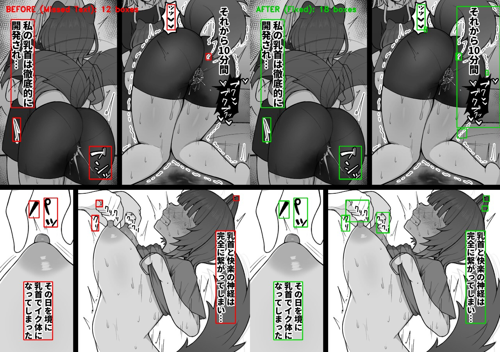
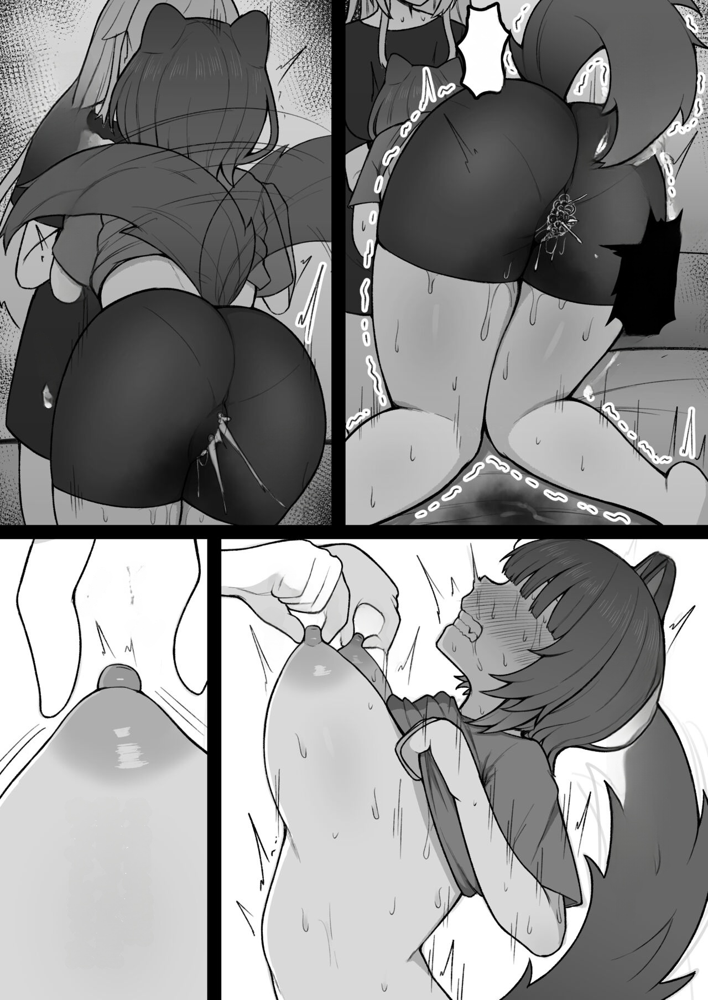
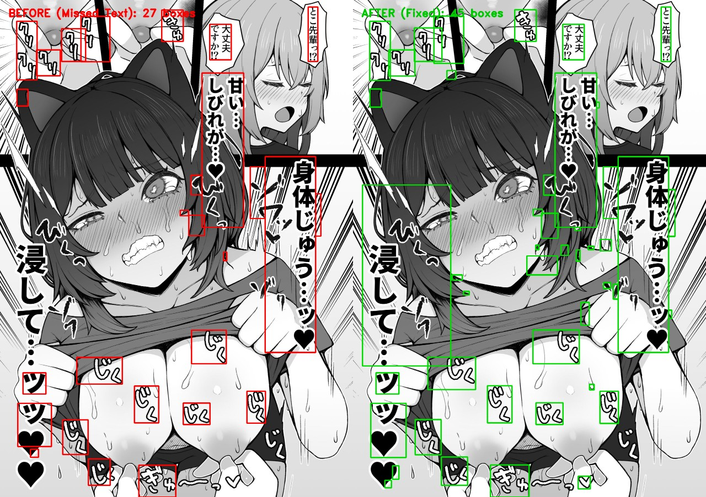
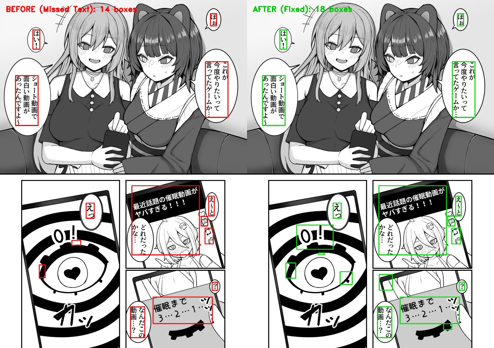

มังงะ: Dosukebe Saimin (491189) | ตรรกะใหม่ใน HybridTextDetector
🔴 ซ้าย (Before): ข้อความบรรยายแนวตั้งสำคัญ 「それから10分間」 (หลังจากนั้น 10 นาที) รวมถึง 「プクプクッ」 และเสียงบีบ 「クリクリ」 บนนิ้วมือ ไม่มีกรอบเลยแม้แต่อันเดียว (หลุดหาย 100%)
🟢 ขวา (After): ตรวจจับเข้ากรอบสีเขียวครบถ้วนทุกตำแหน่งอย่างแม่นยำ

ผลลัพธ์การคลีนผ่าน Inpainting Pipeline ด้วยโมเดล Anime-LaMa: ข้อความบรรยายแนวตั้งและเสียงประกอบถูกลบออกเรียบเนียน โดยที่พื้นหลัง Screentone และลายเส้นตัวละครยังคงอยู่ครบถ้วนสมบูรณ์

🔴 ซ้าย (Before): ตรวจจับได้ 24 บล็อก เสียงคราง 「じくじく」 และหัวใจรอบตัวละครหลุดไปหลายจุด
🟢 ขวา (After): ตรวจจับได้เพิ่มเป็น 34 บล็อก (+10 บล็อก) เก็บเสียงครางและประกายอารมณ์รอบตัวละครได้ครบทั้งหมด

🔴 ซ้าย (Before): ตัวเลขนับถอยหลัง 「0!」 บนหน้าจอมือถือหลุดหาย
🟢 ขวา (After): กล่องสีเขียวตรวจจับ 「0!」 บนหน้าจอมือถือได้เต็มกรอบ
